HISTORY
K2の歩み
2007年に別々に始まった「北原塾（のちの K-ing）」と「K.I.M」は、2017年に統合して K2 になりました。K2 になってからの記録を新しい順に、その下に統合前の2つの会の記録を載せています。
SINCE 2017
K2
2026
- 2026.10.11特別公開K2症例検討会 in SHAPERS EXPO 2026（TOKYO PORTCITY TAKESHIBA）小川大輔 先生、杉山達也 先生、園田晋平 先生
- 2026.9.5–6受賞日本臨床歯科学会 第10回合同例会（京都）東京支部代表として発表・4位「過蓋咬合を伴う咬合崩壊を呈する患者に対して咬合再構成を行った一症例」杉山達也 先生
- 2026.8.30サマーセミナー日本の歯科業界の未来／臼歯部のジルコニアオーバーレイ赤司征大 先生（WHITE CROSS 代表取締役CEO）、遠山敏成 先生
- 2026.7.11例会特別講演荻原太郎 先生
- 2026.6例会ドクターブック例会


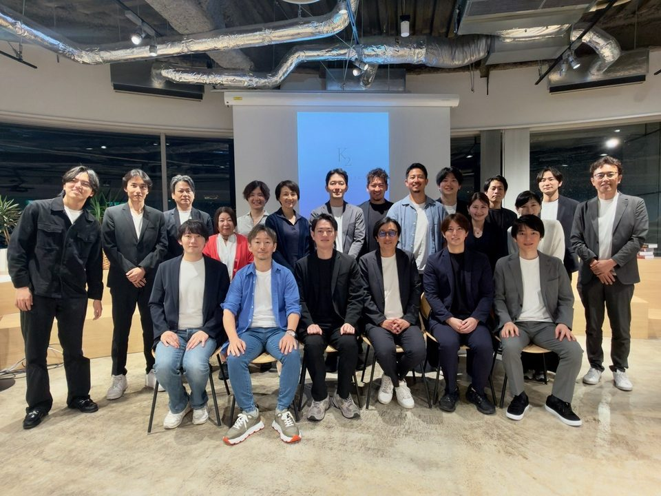
2025
- 2025.12.7ワンデーセミナー咬合を踏まえた睡眠時無呼吸症に対するアプローチ葭澤秀一郎 先生
- 2025.11.16ワンデーセミナー歯科衛生士による講演とハンズオン土屋和子 先生
- 2025.8.31サマーセミナー軽井沢大谷一紀 先生
- 2025.7.12例会（第4回）多数補綴歯の患者に咬合再構成治療をおこなった1症例／MIを考慮した審美的全顎治療計画の立案菅義嗣 先生、植原亮 先生
- 2025.5.10例会（第3回）再根管治療のポイント コア除去、ガッタパーチャ除去橋爪英城 先生
- 2025.3.1例会（第2回）ジルコニアオーバーレイ遠山敏成 先生
- 2025.1.25例会（第1回）バーチャル咬合器を使いこなすための要件高瀬直 先生（歯科技工士）
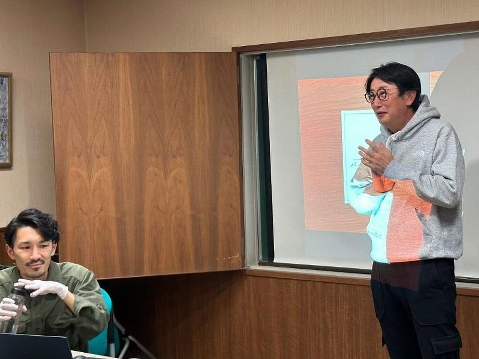
2024
- 2024.10.12例会（第5回）FDOのコンセプトで行う全顎治療／Tooth wearに対して咬合再構成を行った症例とその経過報告杉山達也 先生、高野悟 先生
- 2024.8.25サマーセミナー学術・教育・経営栗林 先生
- 2024.6.23ハンズオンコース第3回
- 2024.5.11定例会イニシャルトリートメントの失敗／難治性歯痛の成因と対応／マイクロスコープと再根管治療橋爪英城 先生
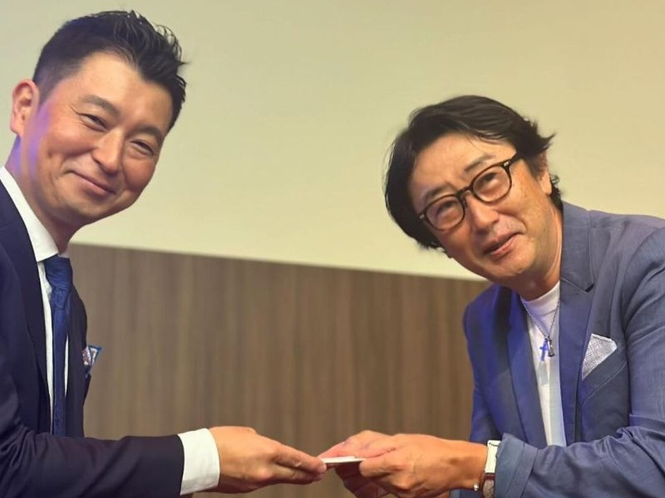
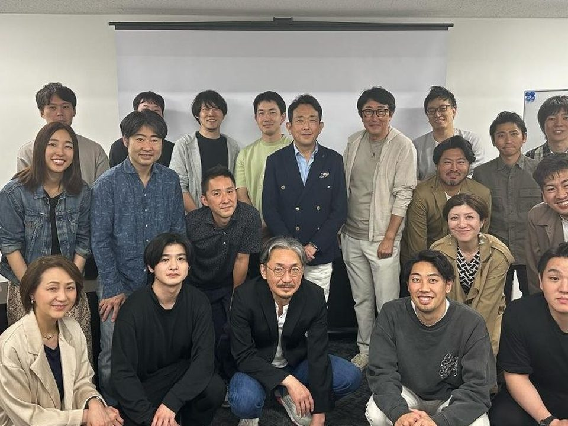
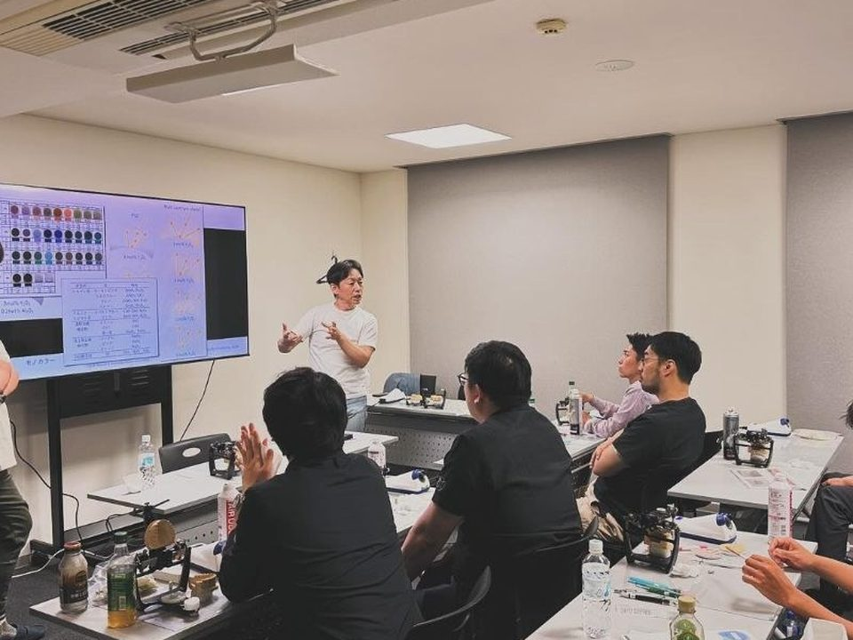
2023
- 2023.8サマーセミナー講師［確認中］
- 2023.4〜12ハンズオンコース全9回
- 2023.2.12KIM年次総会Airway Seminar「Life-saving Dentistry ― 気道中心の歯科医療の実践」園田晋平 先生、葭澤秀一郎 先生、三村彰吾 先生、Shigeharu Yoshida、Keisuke Inoue、Keisuke Iida
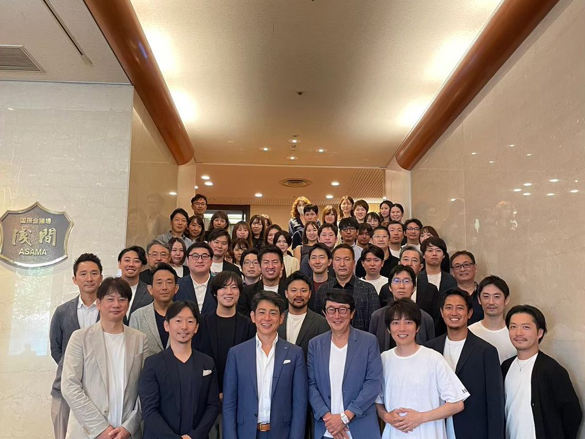
2022
- 2022.8サマーセミナー講師［確認中］
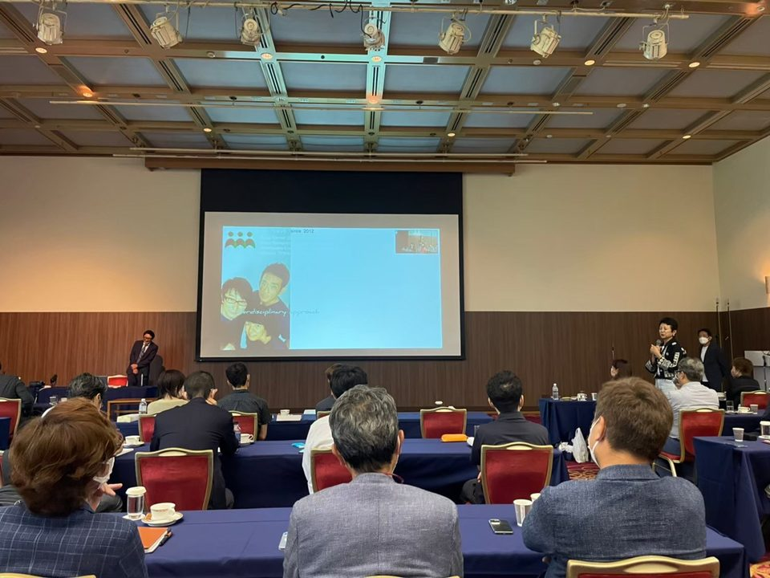
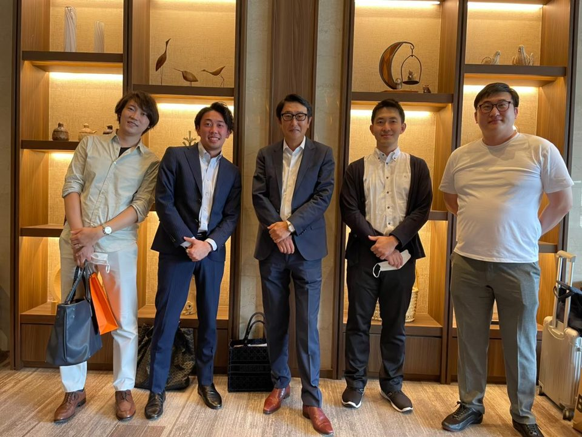
2021
- 2021.8.9サマーセミナー審美修復治療における全顎治療の長期症例（Web併設）山崎長郎 先生
- 2021.3.27例会オンライン開催
- 2021.1.23例会オンライン開催（この年から例会をWebでも開催）
2020
- 2020.2.9KIM総会K.I.M 4th Annual Meeting「Dentistry is Occlusion」The Occlusion／SASとOcclusion／QDT連載メンバーによる発表（座長：茂野啓示・北原信也）桑田正博 先生、堀切雅文 先生、遠山敏成 先生、三村彰吾 先生、園田晋平 先生
- 2020.1.25例会症例発表杉山達也 先生、宮澤広人 先生（歯科技工士）
- 2020.3・5例会新型コロナウイルス感染症の影響で中止

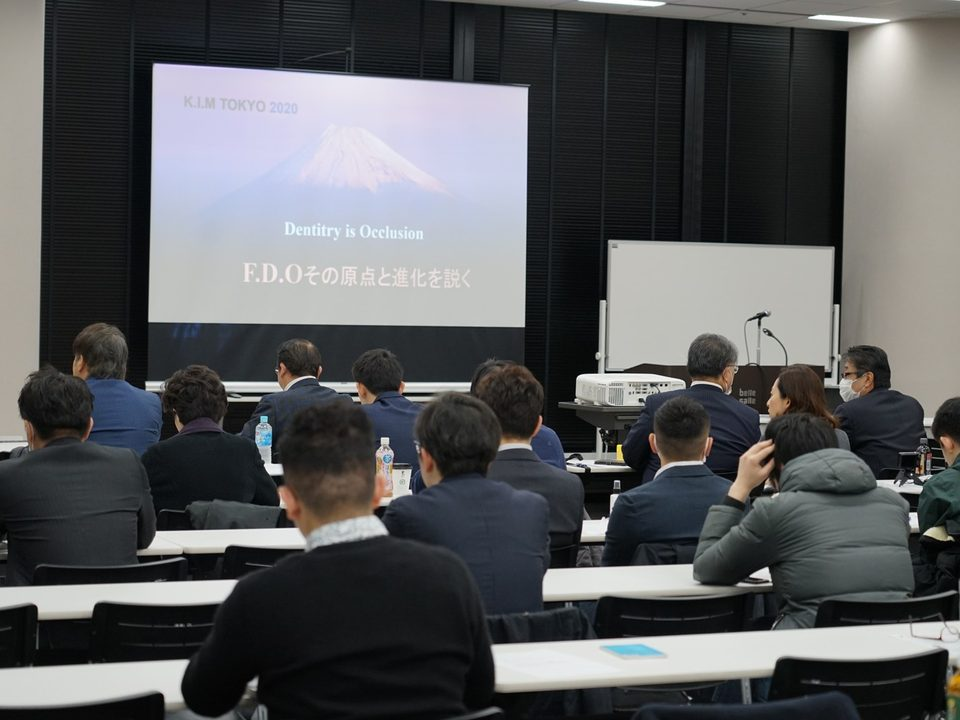
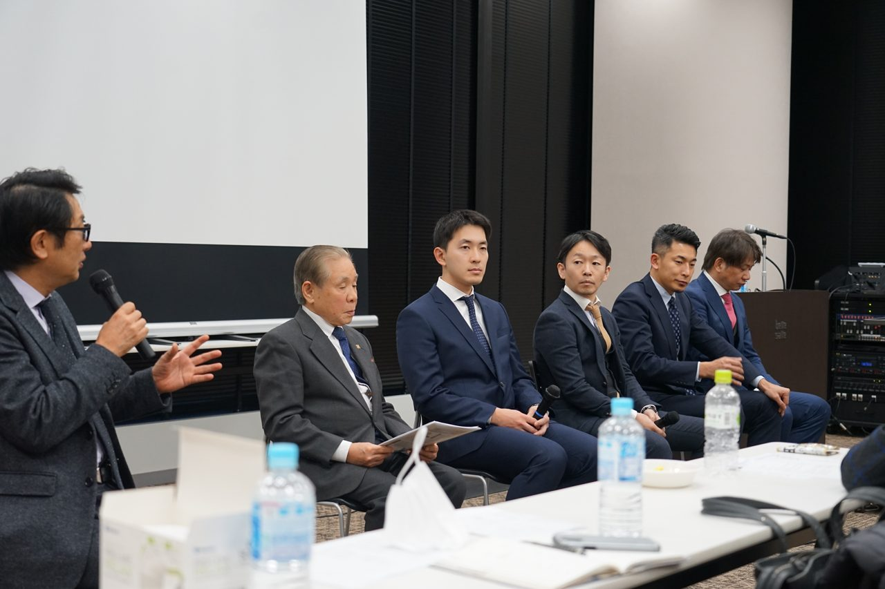
2019
- 2019.10.26例会園田晋平 先生
- 2019.9.1サマーセミナー失敗から学ぶ ～失敗ケースのフォローの仕方～今井俊広 先生、今井真弓 先生
- 2019.7.20例会菅野 先生、田島 先生
- 2019.5.18例会睡眠時無呼吸について堀切雅文 先生、片平 先生
- 2019.3.23例会天井 先生
- 2019.1.26例会北原信也 先生
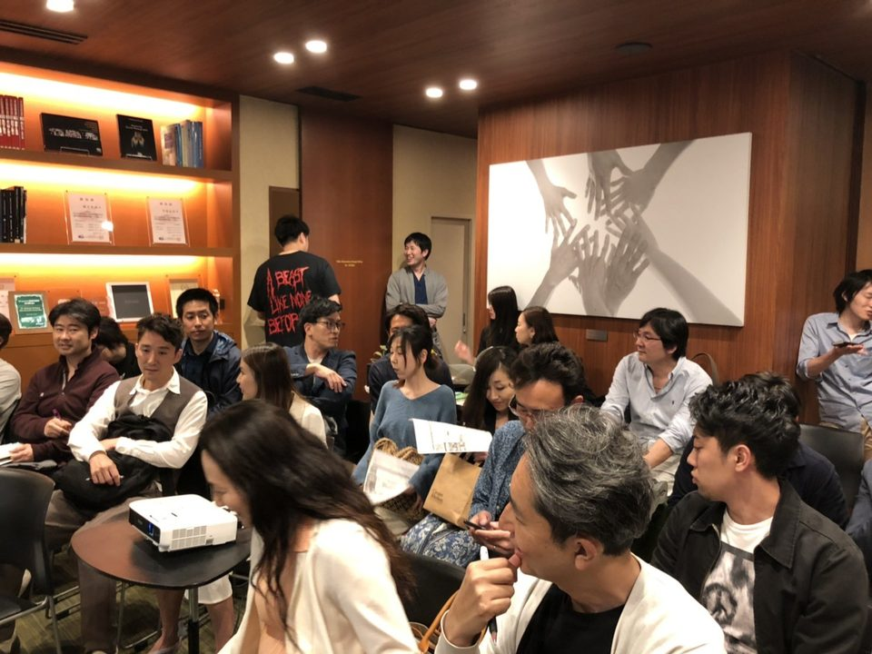
2018
- 2018.8.26サマーセミナーK2設立記念講演「修復治療の変遷、そしてこれからの歯科治療を展望する」（K2として初のサマーセミナー）桑田正博 先生
- 2018.5.16例会講師［確認中］
- 2018.1.20例会講師［確認中］
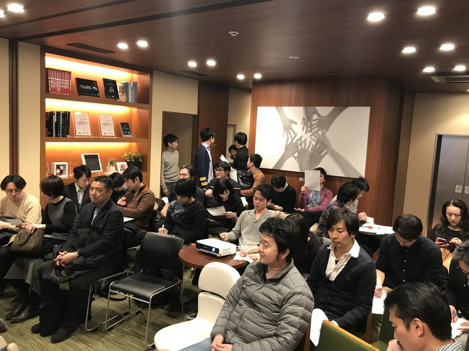
2017
- 2017.11.25発足第1回役員会。北原塾・K-ing と K.I.M が統合した会の名称・理念（「審美と機能を学ぶスタディグループ」）・役員体制を決定。この日を K2 の始まりとしています
- 2017.11.25講演西山 先生
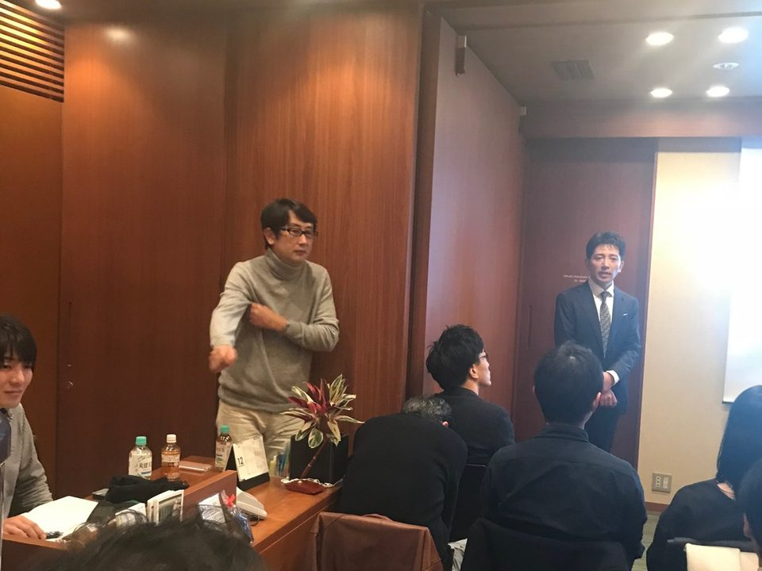
BEFORE K2
統合前の2つの流れ
SINCE 2007 ・ Kitahara Academy
北原塾・K-ing
2007年、北原信也先生のもと「北原塾」として始まりました。SJCDレギュラーコース受講生の寺子屋として、審美と補綴を中心に症例発表を重ねる勉強会です。のちに名称を「K-ing」と改め、一時は「T-FED」の名称も使いました。
2017
- 2017.8.20サマーセミナーペリオ若林健史 先生
- 2017.3.19スペシャルセミナーアメリカ歯周治療の最前線に学ぶ（座長：若林健史・北原信也）Dr. Seiko Min 先生（閔成弘・米国ボード認定歯周病専門医）
- 2017.1.21オープンセミナーデジタルデンティストリーの現状北原信也 先生
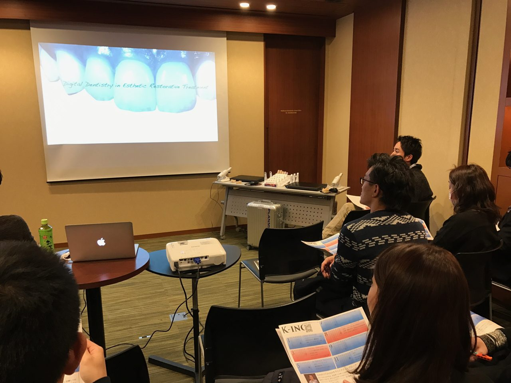
2016
- 2016.12.17忘年会K.I.M 東京支部と合同で開催
- 2016.9.24例会特別講演中村茂人 先生
- 2016.8.21サマーセミナー創立10周年記念サマーセミナー（東京 K.I.M と合同）茂野啓示 先生
- 2016.3.26例会オクルージョン遠山敏成 先生
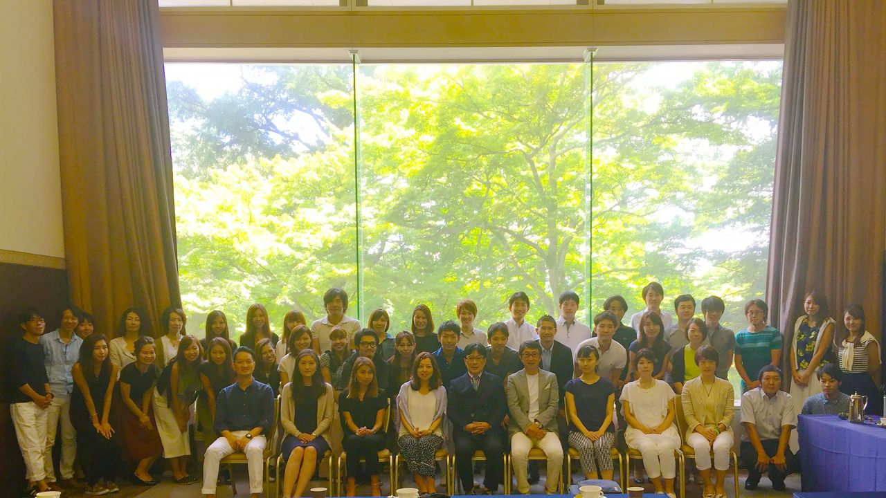
2015
- 2015.8.29–30サマーセミナー富山（宇奈月温泉）で開催
- 2015.1.24オープンセミナーEsthetic treatment with definitely diagnosis北原信也 先生
2014
- 2014.8.31サマーセミナーダイレクトボンディング（充填ライブ）宮崎真至 先生（日本大学歯学部 教授）
- 2014.1.25オープンセミナー北原信也 先生
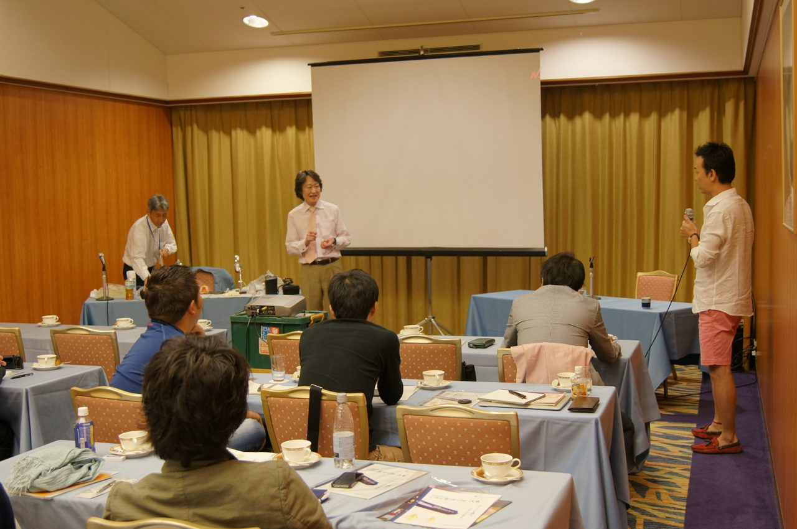
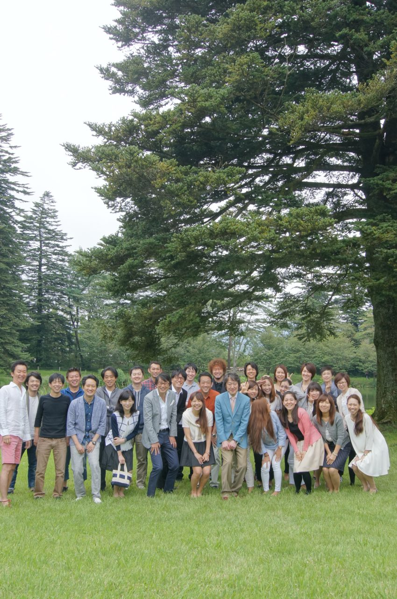
2013
- 2013.8.25サマーセミナー歯科医療安全管理は万全ですか？渋谷鑛 先生（日本大学松戸歯学部 学部長）

2012
- 2012.8.26サマーセミナー軽井沢土屋和子 先生（スマイル・ケア）
2010
- 2010.8.1夏季合宿第一回夏季合宿 in 軽井沢。ご家族・スタッフも参加。いまのサマーセミナーの原点北原信也 先生、土屋覚 先生
2007
- 2007発足北原塾 発足。SJCDレギュラーコース受講生の寺子屋として、審美と補綴を中心に学ぶ勉強会
SINCE 2007 ・ Kuwata Institute Millennium
K.I.M
2007年、歯科技工士を中心に、桑田正博先生の咬合理論（F.D.O：Functionally Discluded Occlusion）を学ぶ勉強会として発足しました。「桑田先生の理論と技術の正確な継承、臨床への応用と後世への伝承」を目的に、総会や学会発表を重ねてきました。K2 の発足後も、K.I.M の総会は続いています。
2016
- 2016.8.21サマーセミナーK-ing と合同でサマーセミナーを開催
- 2016.2.7オープンミーティング世界最先端歯科治療における咬合臨床北原信也 先生、上林健 先生、茂野啓示 先生、吉永修 先生、川嵜俊明 先生、三村彰吾 先生、桑田正博 先生
2014
- 2014.6.14総会2014年度 K.I.M 総会（東京・銀座）
2013
- 2013.6.29総会2013年度 K.I.M 総会（東京・丸の内）
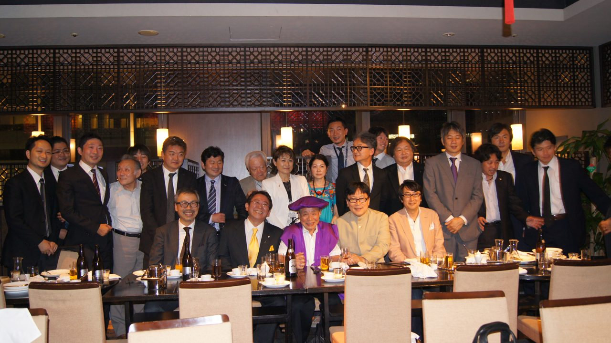
2011
- 2011.12.4総会F.D.O を各学会で発表していく方針を決定
2010
- 2010.10.3第1回総会「桑田理論を日本に根付かせる」を掲げて開催（東京・渋谷）。桑田先生のご講演と会員の症例発表桑田正博 先生、茂野啓示 先生、園田晋平 先生、三村彰吾 先生、小笠原美由紀 先生、安冨哲士 先生
2007
- 2007発足K.I.M（Kuwata Institute Millennium）-Tokyo 発足。歯科技工士を中心に桑田先生の咬合理論を学ぶ勉強会
記録は公式Instagram、保管写真、当時の案内や議事録をもとにまとめています。抜けている年や講師名、訂正があれば事務局までお知らせください。